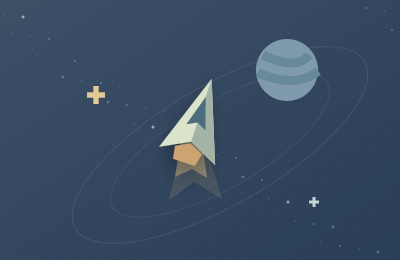

跳到游戏区域
独乐
.
SOLO ARCADE
单机 · 即点即玩
返回首页
首页
/
街机动作
/
打砖块
100 LEVELS. A WHOLE NEW ADVENTURE.
打砖块
100 关冒险
100 关冒险，把烦恼炸个痛快。
收藏游戏
街机动作
打砖块
本局得分
0
个人最佳
0
重开本关
Ⅱ
SOLO TIME
休息一下
准备好了，再接着玩。
继续游戏
回到首页
KEEP THE GOOD TIMES GOING
下一局，也有好心情。
贪吃蛇
再吃一口，就真的最后一口。
↗
方块消除
把生活的棱角，拼得刚刚好。
↗

星轨穿梭
穿过星海，收集你的小小光芒。
↗
请开启 JavaScript 来游玩。